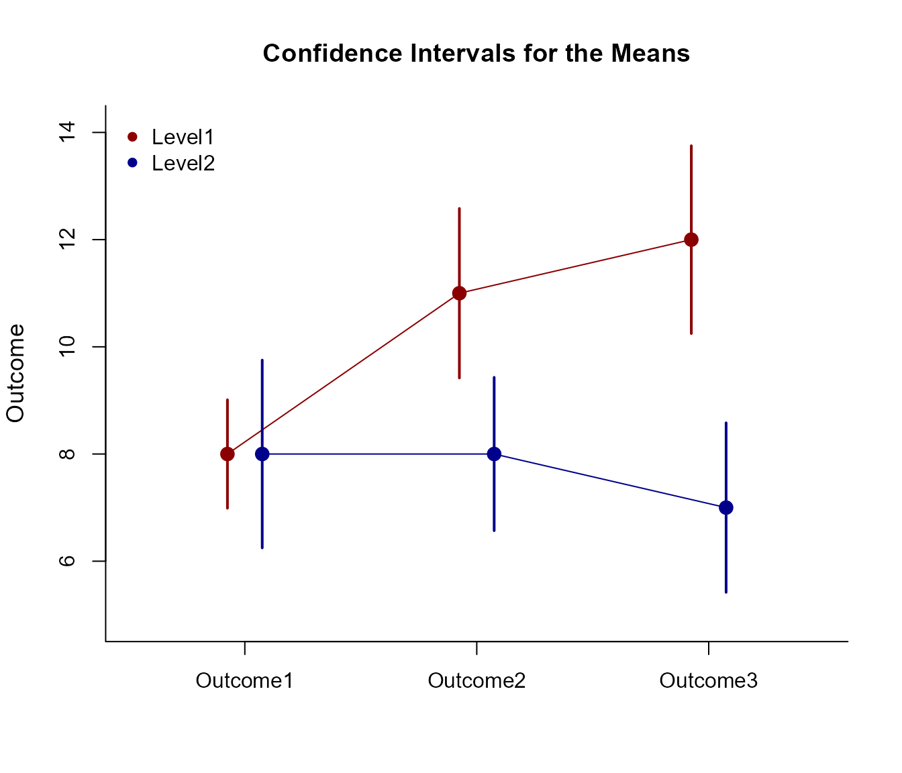

Interaction Mixed Data Application
Source:vignettes/InteractionMixedDataApplication.Rmd
InteractionMixedDataApplication.RmdThis page provides analyses of interactions using mixed design (between-subjects and within-subjects) data.
Data Management
This code inputs the variable names and creates a viewable data frame.
Factor <- c(rep(1, 10), rep(2, 10))
Factor <- factor(Factor, levels = c(1, 2), labels = c("Level1", "Level2"))
Outcome1 <- c(6, 8, 6, 8, 10, 8, 10, 9, 8, 7, 5, 9, 10, 9, 11, 4, 11, 7, 6, 8)
Outcome2 <- c(7, 13, 11, 10, 13, 8, 11, 14, 12, 11, 7, 8, 7, 11, 10, 7, 8, 4, 8, 10)
Outcome3 <- c(9, 16, 11, 12, 15, 13, 9, 14, 11, 10, 8, 6, 8, 11, 5, 7, 9, 3, 6, 7)
MixedData <- construct(Factor, Outcome1, Outcome2, Outcome3)Analyses of the Omnibus Design
Get an ANOVA for the design as a whole, including a source table, an estimate of the proportion of variance accounted for, and an ANOVA test of the main effects and interaction.
construct(Outcome1, Outcome2, Outcome3) |> describeFactorial(by = Factor)$`Source Table for the Model: Between Subjects`
SS df MS
Blocks 106.667 1.000 106.667
Subjects 152.000 18.000 8.444
$`Source Table for the Model: Within Subjects`
SS df MS
Measures 30.000 2.000 15.000
Measures:Blocks 63.333 2.000 31.667
Residual 98.000 36.000 2.722
construct(Outcome1, Outcome2, Outcome3) |> estimateFactorial(by = Factor)$`Proportion of Variance Accounted For by the Model: Between Subjects`
Est LL UL
Blocks 0.412 0.114 0.595
$`Proportion of Variance Accounted For by the Model: Within Subjects`
Est LL UL
Measures 0.234 0.040 0.385
Measures:Blocks 0.393 0.163 0.528
construct(Outcome1, Outcome2, Outcome3) |> testFactorial(by = Factor)$`Hypothesis Tests for the Model: Between Subjects`
F df1 df2 p
Blocks 12.632 1.000 18.000 0.002
$`Hypothesis Tests for the Model: Within Subjects`
F df1 df2 p
Measures 5.510 2.000 36.000 0.008
Measures:Blocks 11.633 2.000 36.000 0.000Plot the means and confidence intervals for the design as a whole.
construct(Outcome1, Outcome2, Outcome3) |> plotFactorial(by = Factor, col = c("darkred", "darkblue"))
legend("topleft", inset = .01, box.lty = 0, pch = 16, legend = c("Level1", "Level2"), col = c("darkred", "darkblue"))
Analyses of Interaction Contrasts
Identify a 2 x 2 interaction of interest (in this case, two levels of Outcome and the existing two levels of the Factor). Estimate, plot, and test the interaction contrast (which includes the comparisons within each simple effect).
construct(Outcome1, Outcome2) |> estimateInteraction(by = Factor)$`Confidence Intervals for the Simple Effect Constrasts`
Est SE df LL UL
Simple Effect at Level1 3.000 0.596 9.000 1.651 4.349
Simple Effect at Level2 0.000 0.775 9.000 -1.752 1.752
$`Confidence Interval for the Interaction Contrast`
Est SE df LL UL
Interaction -3.000 0.978 16.894 -5.063 -0.937
construct(Outcome1, Outcome2) |> testInteraction(by = Factor)$`Hypothesis Tests for the Main Effect Constrasts`
Est SE t df p
Simple Effect at Level1 3.000 0.596 5.031 9.000 0.001
Simple Effect at Level2 0.000 0.775 0.000 9.000 1.000
$`Hypothesis Test for the Interaction Contrast`
Est SE t df p
Interaction -3.000 0.978 -3.069 16.894 0.007
construct(Outcome1, Outcome2) |> plotInteraction(by = Factor)